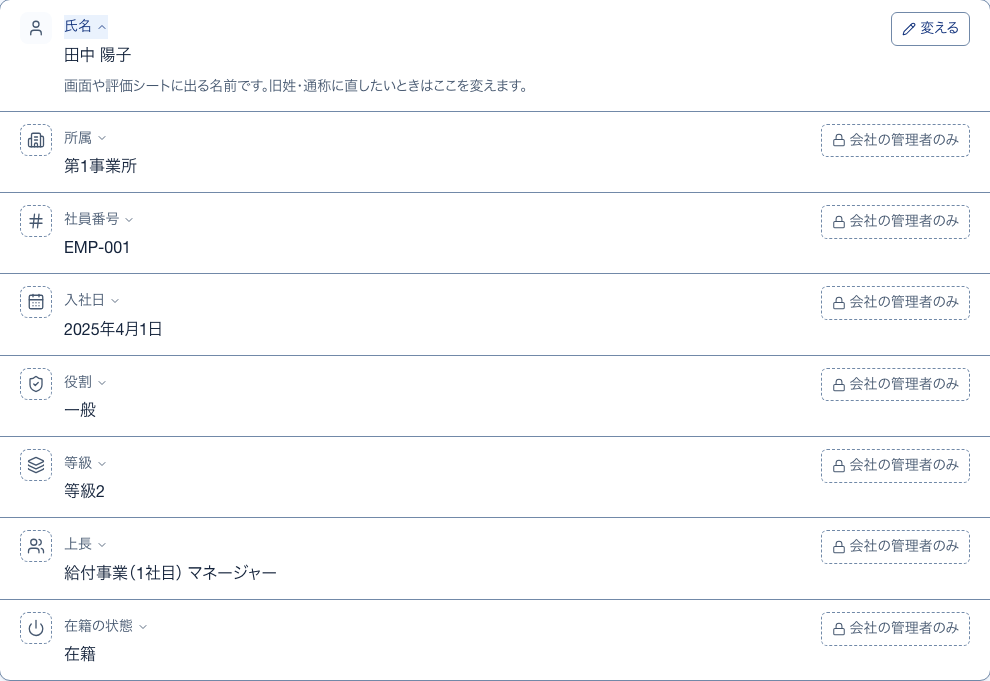
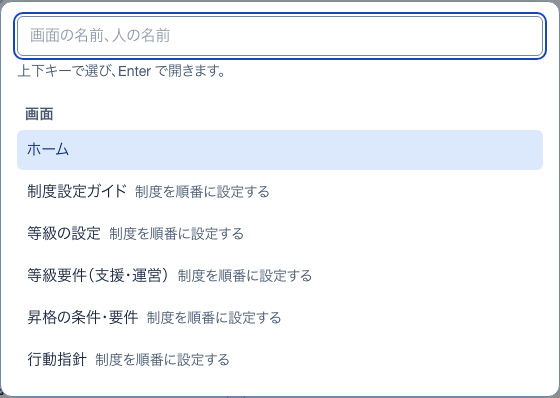
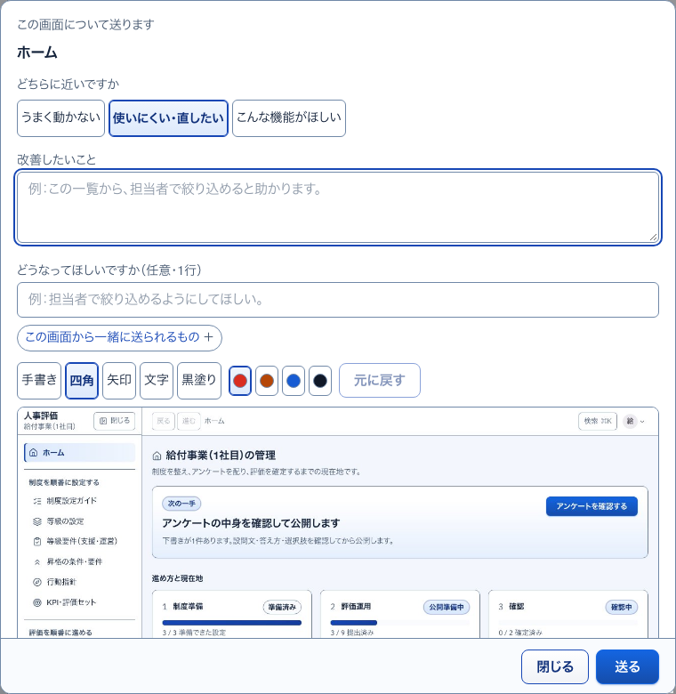

1アカウントのメニュー選ぶ一覧
COMMON 共通の枠 ・ 押すもの: 「給」 ・ 閉じる: Esc
中に出るもの
- 名前とメールアドレス
- 役割と会社の札
- 画面の明るさ（自動・明るい・暗い）
- 画面の配色（6つ。指すと感じの説明が出る）
- 自分の情報
- パスワードを変える
- ログアウト
中で押せるもの
- 画面の明るさ・画面の配色: すぐにその見た目に変わり、端末に覚える
- 自分の情報: 自分の情報へ移る（→ S02）
- パスワードを変える: パスワードの変更へ移る（→ S03）
- ログアウト: ログアウトする（→ S01）
4項目の説明開いて見る
S02 自分の情報 ・ 押すもの: 「氏名」

中に出るもの
- その項目が何かの説明（例: 画面や評価シートに出る名前）
- 変えられない項目には「変更は会社の管理者にご相談ください。」
2画面と人を探す小窓
COMMON 共通の枠 ・ 押すもの: 「検索」 ・ 閉じる: Esc

中に出るもの
- 探す欄（画面の名前、人の名前）
- 上下キーで選び、Enter で開く案内
- 画面の候補（何も打たないときは6件）
- 人の候補（人の一覧を見られる役割だけ）
中で押せるもの
- 画面を選ぶ: その画面へ移る
- 人を選ぶ: 役割に応じて利用者1人・社員1人・メンバー1人へ移る（→ S07・S25・S41）
3改善要望を送る小窓
COMMON 共通の枠 ・ 押すもの: 「改善要望」 ・ 閉じる: 閉じる

中に出るもの
- この画面について送ります（画面名）
- どちらに近いですか（うまく動かない・使いにくい・直したい・こんな機能がほしい）
- 改善したいこと（本文）
- どうなってほしいですか（任意・1行）
- 撮った画面の写しと書き込みの道具（手書き・四角・矢印・文字・黒塗り）
- 開閉「この画面から一緒に送られるもの」
中で押せるもの
- 撮り直す: 画面を撮り直す
- 画像を外す（文章だけで送る）: 写しを外す
- ファイルを選ぶ: 手元の画像を写しにする
- 元に戻す: 最後の書き込みを1つ消す
- 送る: 要望を送る。届いた改善要望に並ぶ（→ S46）
- 閉じる: 小窓を閉じる。書きかけは次に開くと戻る